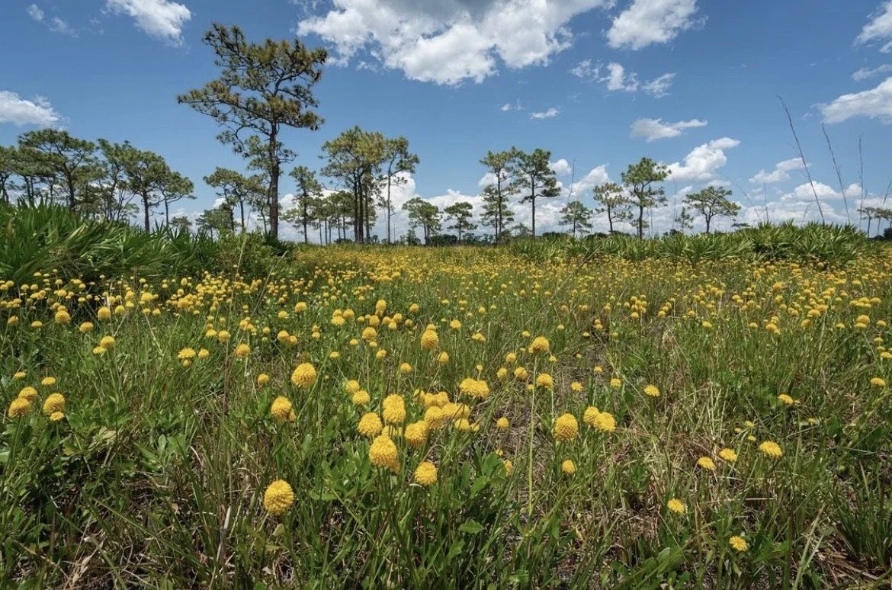
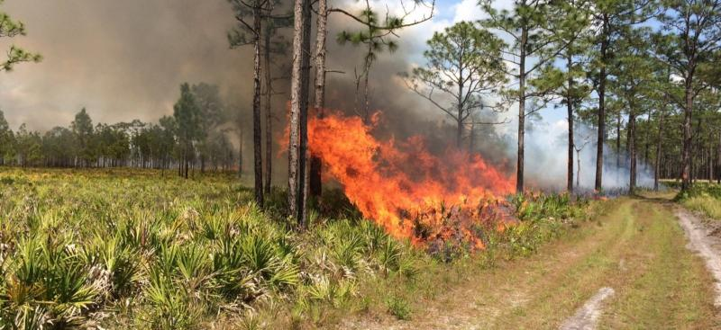
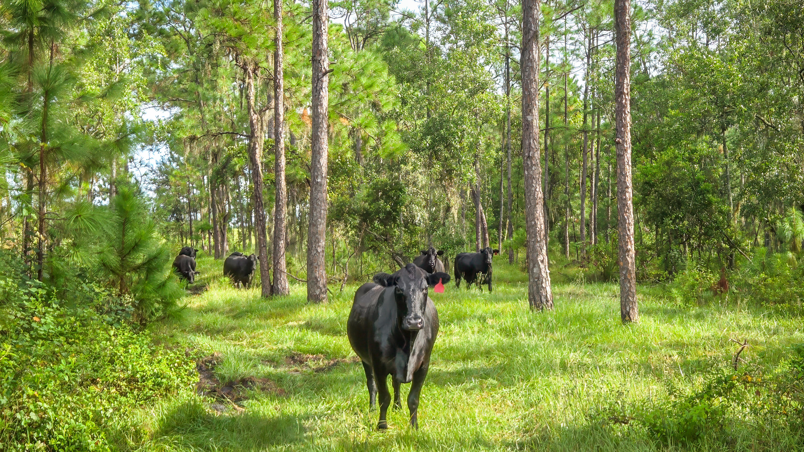
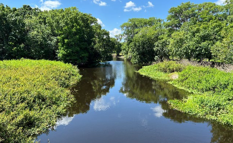
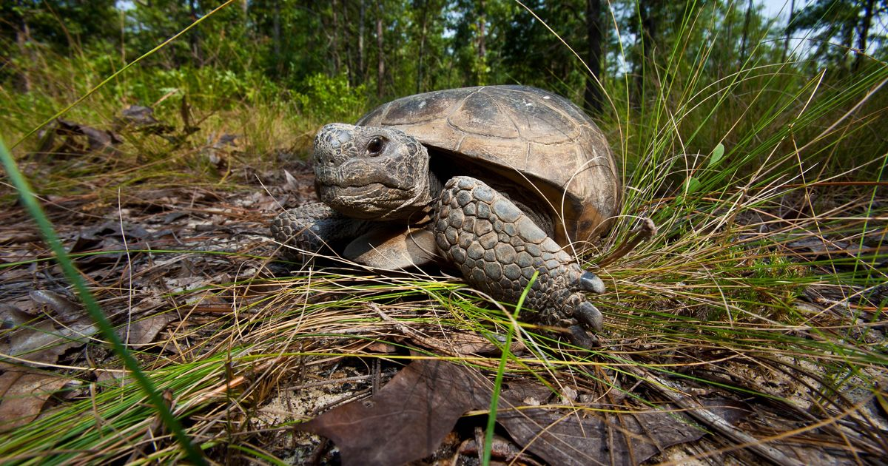
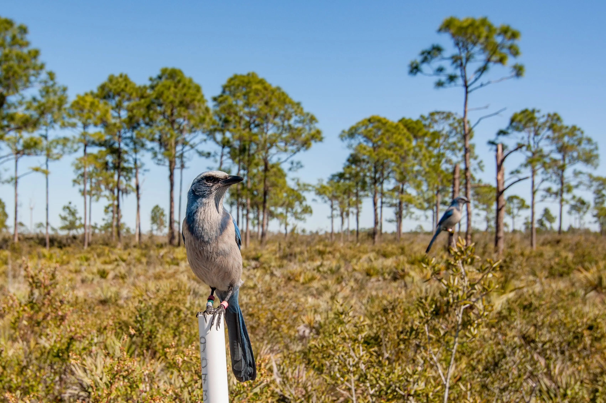

Flooding
Flood Resilience
Wetlands, connected water systems, recharge areas, and landscapes capable of storing and moving water contribute to higher flood resilience.
Parcel-scale resilience across wetlands, working lands, fire-adapted ecosystems, and Central Florida communities.
The Avon Park Air Force Range Sentinel Landscape sits within a region shaped by water, fire, severe weather, working lands, and long-term stewardship.
This assessment applies the Resilience Scorecard across APAFRSL and the surrounding five-county Central Florida Regional Planning Council service area to evaluate parcel-scale resilience to flooding, wildfire, and severe storms.
The results show that resilience is not defined by avoiding disturbance. It depends on how well the landscape can store and move water, live with fire, withstand recurring storms, and maintain ecological and operational function over time.
By combining hazard exposure with landscape condition, hydrologic function, development pressure, infrastructure sensitivity, and management context, the Scorecard helps partners distinguish between places that are simply exposed and places that are genuinely vulnerable.

The Avon Park Air Force Range Sentinel Landscape tells three different resilience stories. Water must move across the landscape, fire is a necessary disturbance, and severe weather cannot be avoided. Together, they reveal how natural and working lands support military readiness, agriculture, wildlife, water resources, and rural communities across Central Florida.
Wetlands, connected lakes, recharge areas, and functioning hydrologic systems create space to store, move, and absorb water.
Fire-adapted ecosystems and active management show that exposure to fire does not automatically mean vulnerability.
Natural systems, infrastructure, and landscape condition influence how well places absorb impacts and recover after severe weather.
Resilience here is not the absence of disturbance. It is the ability of natural and working lands to experience disturbance and continue functioning. Across APAFRSL, that capacity emerges from the interaction of water, fire, weather, development, infrastructure, and long-term land management.
Across the Avon Park Air Force Range Sentinel Landscape, some of the clearest patterns of resilience follow the movement of water.
Large wetland systems, connected lakes, groundwater recharge areas, and other hydrologically connected landscapes frequently exhibited higher resilience. These systems provide space for water to move, spread, infiltrate, and be stored rather than immediately becoming runoff.
During periods of heavy precipitation, that capacity matters. Wetlands store floodwater, connected hydrologic systems can reduce runoff, and recharge landscapes help maintain groundwater function and moderate flood impacts.
Explore Flood ResilienceAcross the Avon Park Air Force Range Sentinel Landscape, wildfire resilience reflects an important distinction: living with fire is not the same as being vulnerable to it.
Many of Central Florida's ecosystems developed with recurring fire. Regular burning helps maintain ecological communities, shape vegetation structure, and limit the accumulation of hazardous fuels.
Across the assessment, large natural landscapes and actively managed conservation lands frequently exhibited higher wildfire resilience. These patterns reflect the role of prescribed fire, fuel management, landscape condition, and long-term ecological stewardship in maintaining the capacity to experience fire without losing landscape function.
The wildfire map therefore shows more than where fire may occur. It helps reveal where the landscape may be better equipped to live with fire.
Explore Wildfire Resilience
Across the Avon Park Air Force Range Sentinel Landscape, severe weather may affect large areas at once, but its consequences are not distributed evenly.
Hurricanes, intense rainfall, and wind can affect communities, agriculture, military operations, and natural systems. Connected natural lands, wetlands, vegetation, and soils can help absorb rainfall, maintain ecological function, and support recovery.
The severe storms assessment reveals where landscape and infrastructure conditions may strengthen that capacity, and where altered hydrology, impervious surfaces, and infrastructure sensitivity can compound vulnerability.
Explore Severe Storms ResilienceSome of the most important patterns emerge not where a single hazard is strongest, but where development pressure, infrastructure sensitivity, altered hydrology, impervious surfaces, environmental vulnerability, and repeated storm exposure begin to overlap.
Those differences can occur over surprisingly short distances. Adjacent parcels may receive very different resilience scores because of differences in hydrologic connectivity, land cover, soils, infrastructure, and management.
Resilience does not look the same everywhere, or for every disturbance. Across the Avon Park Air Force Range Sentinel Landscape, the three hazard assessments reveal how water, fire, landscape condition, management, development, and infrastructure shape resilience in different ways.
Wetlands, connected water systems, recharge areas, and landscapes capable of storing and moving water contribute to higher flood resilience.
Fire-adapted ecosystems and actively managed landscapes show how ecological condition, prescribed fire, fuel management, and long-term stewardship influence resilience.
Natural infrastructure, landscape condition, and infrastructure sensitivity influence how well different places absorb impacts and recover from severe weather.
No single map tells the whole story. A parcel may be resilient to one disturbance while remaining vulnerable to another. Viewed together, the assessments reveal both resilience anchors worth protecting and places where conservation, restoration, management, or planning could strengthen resilience.
Military readiness at Avon Park Air Force Range depends on more than conditions within the installation boundary.
Wetlands, recharge areas, fire-managed ecosystems, working lands, and connected natural landscapes across APAFRSL influence how water moves, how fire behaves, how storms affect infrastructure, and how compatible land uses are maintained around the installation.
Those same systems that strengthen ecological resilience can also support military readiness, compatible land use, infrastructure resilience, and long-term mission support.
Protecting and strengthening landscape function across APAFRSL can create shared benefits for military readiness, conservation, working lands, and community resilience.
Resilience is not entirely fixed. Across APAFRSL, management matters.
The Scorecard can help partners distinguish between resilience anchors worth protecting and places where conservation, restoration, or management could strengthen landscape function over time.


These same management decisions also sustain the habitats and species that depend on functioning landscapes across APAFRSL.


Together, these strategies show how conservation and management can protect existing resilience, strengthen landscape function, and sustain the ecological systems that make APAFRSL distinctive.